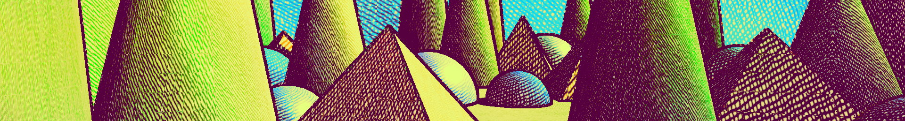

Gamelogic Fx Cross-hatching
Version 6.0.0

Gamelogic Fx Cross-hatching provides a collection of shaders for producing cross-hatching effects in Unity. This can be used to create stylized rendering resembling drawings with pencils, crayons, pastels, markers, or pen.
The basic technique is to apply layers of hatching textures in a way to resemble the original shading. They differ in how colors are mixed when these layers overlay, creating different styles.
Simple-hatch: uses additive blending (
A + B - 1), which closely approximates CMY (multiplicative) blending for values in [0, 1]. This is a good choice for wet mediums such as ink, watercolor, or markers. It is the most efficient to render, and can be combined with color mapping to resemble more complex shaders.Convex hull hatching: Uses lerp to mix colors, which means all resulting colors fall inside the convex hull of the primary colors used. This is a good choice for dry mediums such as pencil, charcoal, or pastels. (Generally blue and yellow don't make green, so adding a green in the primaries is often required to make the technique work well.)
Mixbox convex hull hatching: Uses Mixbox lerping to mix colors, a mixing model that resemble physical media better. Blue and green can make green, and overall colors are more vibrant. This is the most expensive to render, but is the best choice for most media. It requires the (free) Mixbox plugin to work. See Mixbox for installation instructions.
Samples
The package includes a sample scene demonstrating the various dithering effects and their settings. See How to import samples for instructions on how to import the sample scene into your project.
Important
Make sure you open the scene in the folder that corresponds to the rendering pipeline you are using.
For Built-in:
Assets/Samples/[Package]/[Version]/[Package Samples Root]/[Sample]/BuiltIn/
For URP:
Assets/Samples/[Package]/[Version]/[Package Samples Root]/[Sample]/URP/
Quick Start
Built-in Render Pipeline
- Select your camera in the Hierarchy.
- Click Add Component and search for the effect (e.g. Simple Hatch).
- The effect is active immediately — adjust properties in the Inspector.
See How to use post effects for a full walkthrough.
Universal Render Pipeline (URP)
- Open your URP Renderer asset.
- In the Renderer Features list, click Add Renderer Feature and search for the effect.
- Expand the feature to adjust its properties.
See How to use post effects for a full walkthrough.
Included Shaders
Post-effect shaders
Create full-screen cross-hatching using the Built-in Render Pipeline or URP.
- 📘 How to use post effects.
- 📘 How to use map renderers.
- Cross-hatching Post Effects Reference for details on each effect.
- Cross-hatching Tips for best practices and recommendations.
Pipeline Support
This package supports both:
- Built-in Render Pipeline
- Universal Render Pipeline (URP)
Most settings are identical in both pipelines. Differences are documented in the 📘 How-to guide.
Additional Tools Included (Gamelogic Fx)
The package also ships with Gamelogic Fx, which provides reusable utilities for effect development:
- Texture Generation Tools: generate gradients, noise, patterns, LUTs, and more.
- Post Effect Framework: lightweight base classes for building custom post effects.
- Common Shaders: shared building blocks used across effects.
- Common Map Renderers: base classes for rendering procedural maps.